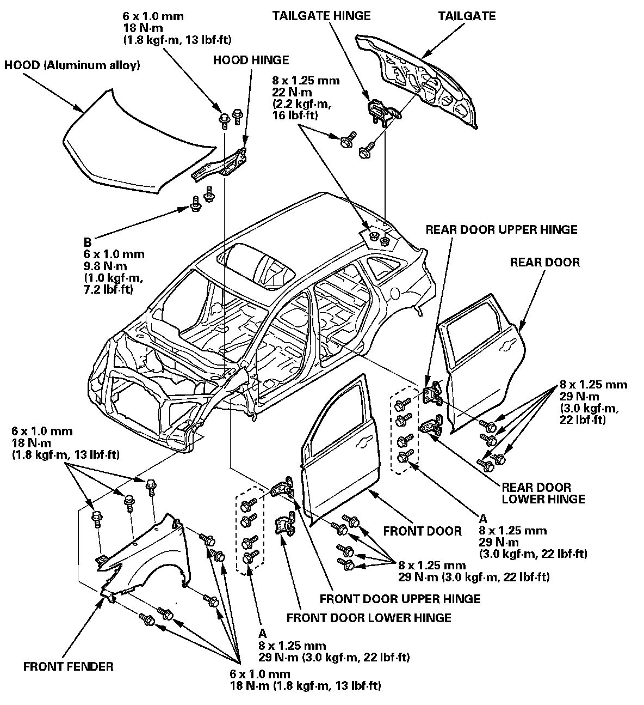
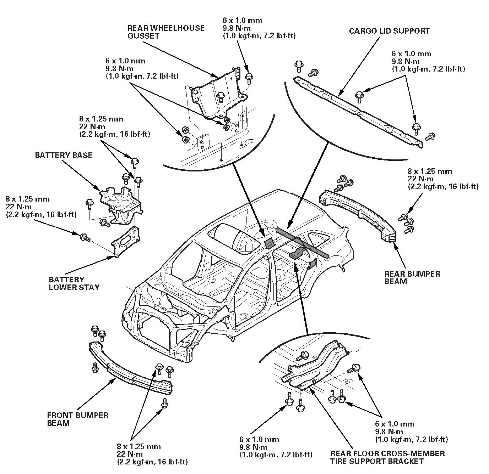

Exterior Parts Removal/Installation
General InformationExterior Parts Removal/Installation
NOTE:
- To adjust the alignment of the hood, the doors, and the tailgate, refer to the appropriate procedure.
- When adjusting the door in or out, replace the mounting bolts (A) (90102-SFA-3050).
- Apply the spot sealer to both mating surface, then install the hood, doors, tailgate, and hinges.
- The hood mounting bolts (B) are special corrosion-resistant bolts. Before installing the hood, replace the mounting bolts with new ones.
Exterior Parts Removal/Installation:

Exterior Parts Removal/Installation:
